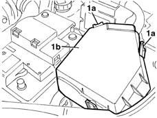
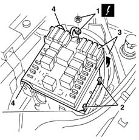
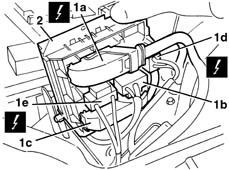

5505A13 supplementary junction control unit in engine bay - r r
- Path
- Procedures > 55 ELECTRICAL EQUIPMENT > 5505 ELECTRICAL CIRCUIT FOR INSTRUMENTS/INDICATORS > 5505A multi-function components > 5505A13 supplementary junction control unit in engine bay - r r
- Kind
- repair procedure (removal / refitting; the operation number is the code)
- Applies to
- all engines; all production periods
- Interactive page
- https://sloeber94.github.io/elrnDB-lYpsln/en/#/2429363
Applies to: all engines; all production periods
 Removing
Removing
 Refitting
RefittingOpen the bonnet lid.
1. Release the retainers (1a) and remove the cover (1b).

Applies to: all engines; all production periods
1. Disconnect the upper electrical connection.
 | Name | Connector |
|---|---|---|
1 | Engine compartment junction unit |
2. Undo the control unit side retainers.
3. Raise the control unit.
4. Release the control unit pins from their retainers.

Applies to: all engines; all production periods
1. Lift the control unit slightly and disconnect the lower electrical connections (1a, 1b, 1c, 1d, 1e).
| Name | Connector |
|---|---|---|
1a | Engine compartment junction unit |
| Name | Connector |
|---|---|---|
1b | Engine compartment junction unit |
| Name | Connector |
|---|---|---|
1c | Engine compartment junction unit |
| Name | Connector |
|---|---|---|
1d | Engine compartment junction unit |
| Name | Connector |
|---|---|---|
1e | Engine compartment junction unit |
2. Recover the control unit

Applies to: all engines; all production periods
Refitting
RemovingCheck that the additional junction unit is not damaged.
Connect the lower electrical connection and place the control unit in position.
Do up the control unti retainers and pins.
Connect the upper electrical connection.
Close the cover and attach the retainers.
Test the electrical system.
Topics linked from this page (6)
- B1A Engine compartment junction unit ( FRONT )
- B1B Engine compartment junction unit ( FRONT )
- B1C Engine compartment junction unit ( ENGINE )
- B1D Engine compartment junction unit ( FRONT )
- B1E Engine compartment junction unit ( CROSSMEMBER )
- B1X Engine compartment junction unit ( BATTERY POSITIVE )
Topics that link to this page (7)
- 3330D02 brake servo/brake pump assembly - r r
- 3340A12 A'B.S. system. - electronic and hydraulic CONTROL UNIT R.R.
- 3340A13 abs central mount - r r
- 3340A20 abs electronic control unit - r+r
- 3340B55 central brake pipe to lh - r r
- 5505A29 container of supplementary junction unit in engine bay - r r with supplementary junction unit removed
- 7025A26 bonnet lid opening control - repair